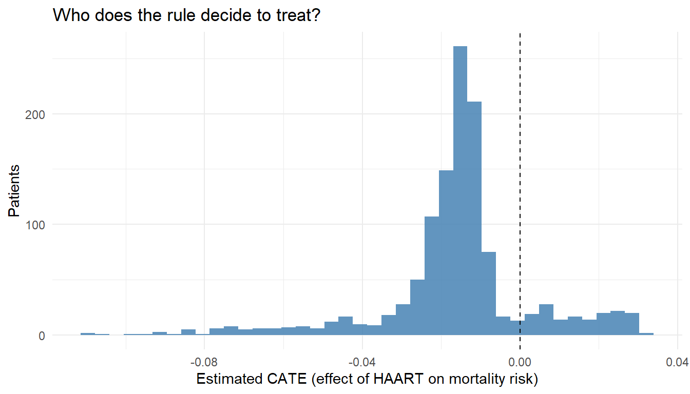
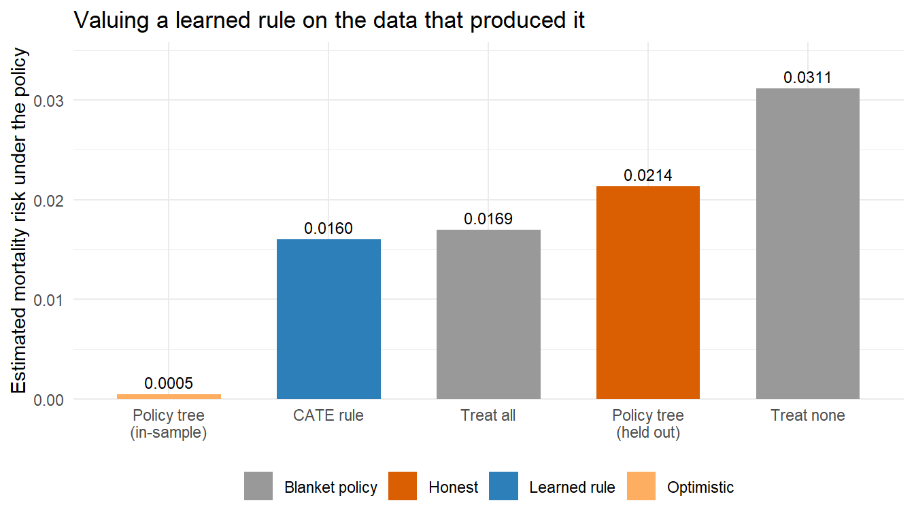

Guidelines for when to start antiretroviral therapy moved over two decades from “treat once CD4 falls below 200” to “below 350”, then “below 500”, and finally “treat everyone at diagnosis”. Each change was a single threshold applied to every patient. A natural next question is whether one threshold is best for everyone, or whether a younger patient with a slowly declining CD4 count and an older patient with a rapid decline should be treated under different rules.
Chapter 23 asked who benefits more. This chapter asks the decision that follows: given what we can measure about a patient, what should we do, and how much better off would the population be if everyone followed that rule?
Learning objectives
State the optimal-rule estimand and the value of a treatment rule in plain language
See why an optimal rule is built directly from the conditional treatment effect
Estimate a treat-if-benefit rule and its value, and compare it to treat-all and treat-none
Learn a shallow, interpretable rule with policytree and value it honestly
Recognize the two failure modes that matter most: positivity inside the subgroups a rule creates, and instability for patients whose benefit is near zero
Causal conclusions require the identification assumptions of Chapter 5. When flexible machine learning estimates the rule or its value, valid inference requires cross-fitting or a cross-validated TMLE variant (Chapter 12).
25.1 From an average effect to a decision
An average treatment effect answers whether a drug helps on average. A conditional average treatment effect (CATE) answers whether it helps more in some patients than others. Neither tells a clinician what to do with the patient in front of them. A treatment rule does: it is a function \(d(W)\) that takes the baseline information \(W\) on a patient and returns a decision, for example “start HAART now” or “monitor and defer”.
A good rule is not obvious even when the CATE is known. It has to respect what the data can support, it has to be simple enough to use in a clinic, and its benefit has to be estimated on data other than the data that produced it. Those three constraints drive everything below.
25.2 The value of a rule
Fix a candidate rule \(d\). If every patient in the target population were treated according to \(d\), the average outcome would be the value of the rule,
\[
V(d) = E\big[Y^{d(W)}\big],
\]
the expected counterfactual outcome when each person receives the treatment \(d\) assigns to someone with their covariates. For a beneficial outcome we want the largest value; for a harmful outcome such as death we want the smallest. The optimal rule\(d^{*}\) is the rule with the best value among those we are willing to consider.
The connection to the CATE is direct. Write the CATE on the additive scale as \(\tau(W) = E[Y^1 - Y^0 \mid W]\). If treatment is beneficial exactly when \(\tau(W)\) points in the helpful direction, then the rule that maximizes value is the treat-if-benefit rule: treat the patients whose estimated benefit is favourable, withhold from the rest. In the HIV example, if starting HAART lowers a patient’s predicted mortality the rule starts it, and if the predicted effect is nil or unfavourable once side effects and competing risks are counted, it does not. An optimal-rule analysis therefore reuses the CATE estimates from Chapter 23 and adds a decision and a value on top.
25.3 Identification
A rule analysis needs the same three assumptions as any causal effect (Chapter 5): consistency, no unmeasured confounding given \(W\), and positivity. Two points are specific to rules.
The rule may only use information available at the moment the decision is made. A rule that conditions on a post-treatment variable, or on a biomarker nobody measures in practice, is not a rule a clinician could follow, and conditioning on a consequence of treatment reintroduces the bias of Chapter 6.
Positivity has to hold for the treatment the rule assigns, within the covariate groups the rule sends to that treatment. This is a stronger demand than positivity for the average effect, and it is the most common way a rule analysis fails. The worked example returns to it with the HAART data.
25.4 Two routes to a rule
The first route estimates the CATE and thresholds it. Fit the conditional treatment effect with Super Learner or a causal forest as in Chapter 23, then treat wherever the estimated benefit is favourable. This reuses tools already covered and is easy to explain. Its weakness is that the decision depends on the sign of an estimated quantity, so wherever the true benefit is close to zero, small estimation errors flip the decision back and forth.
The second route, policy learning, skips the intermediate CATE and searches directly over a restricted class of simple rules for the one with the best estimated value. A shallow decision tree gives rules like “treat if CD4 is below this cutpoint and age is above that one”, which a clinician can read and apply. Restricting to shallow rules also guards against overfitting, because there are far fewer candidates to choose among. The policytree package implements this on top of the doubly robust scores that grf already computes.
The two are complementary. The CATE route shows where benefit concentrates; policy learning turns that into a deployable rule and protects against reading too much into a noisy individual prediction.
25.5 Estimating the value
Reporting a rule without its value is like reporting a treatment without an effect size. The value \(V(d)\) is itself a causal estimand, estimated with the same doubly robust machinery used for the average treatment effect. For a binary treatment and a rule assigning \(d(W) \in \{0,1\}\), the augmented estimator averages the predicted outcome under the rule’s assigned treatment plus a correction for patients whose observed treatment happened to match the rule:
The practical move is to estimate the value of three policies on one scale: treat everyone, treat no one, and the learned rule. The difference between the learned rule and treat-all answers the question a guideline committee actually has, which is whether individualizing the decision buys anything beyond a blanket policy.
Inference for the value of an optimal rule is harder than for an ordinary average effect. Where the true benefit is exactly zero the optimal decision is undefined, because treating and not treating give the same outcome and noise alone decides which way the rule points. The value of the optimal rule is then a non-smooth target and naive confidence intervals are too narrow. The estimators of Luedtke and Laan (2016) and Laan and Luedtke (2015) handle this with cross-fitting and careful treatment of the near-zero region. The applied consequence is to use those methods rather than a plug-in interval, and to flag patients near the decision boundary as the ones for whom the rule is least certain.
25.6 Worked example: an individualized HAART-initiation rule
The plan has three steps: estimate each patient’s benefit, turn it into a rule, and value the rule against the blanket policies.
cf <-causal_forest(X = W, Y = Y, W = A)tau_hat <-predict(cf)$predictions # estimated effect of HAART on mortality# Death is harmful, so HAART helps a patient when it lowers predicted# mortality. Treat those patients.rule <-as.integer(tau_hat <0)c(`share the rule treats`=round(mean(rule), 3),`median estimated benefit`=round(median(tau_hat), 4))#> share the rule treats median estimated benefit #> 0.8630 -0.0147
Show code
library(ggplot2)ggplot(data.frame(tau = tau_hat), aes(tau)) +geom_histogram(bins =40, fill ="steelblue", alpha =0.85) +geom_vline(xintercept =0, linetype ="dashed") +labs(x ="Estimated CATE (effect of HAART on mortality risk)", y ="Patients",title ="Who does the rule decide to treat?") +theme_minimal()

Figure 25.1: Estimated individual treatment effects of HAART on mortality from the causal forest. Negative values mean HAART is predicted to lower mortality for that patient, so the treat-if-benefit rule treats everyone left of the dashed line. The patients piled up near zero are the ones for whom the rule is least certain, because a small estimation error flips their decision.
Value the rule with the augmented estimator, using a propensity model and an outcome model for the nuisance pieces. The helper values any 0/1 rule on any subset of patients, which the honest evaluation below needs.
Show code
g_hat <-predict(glm(ever_haart ~ age + sex + cd4_sqrt_baseline,family = binomial, data = hb), type ="response")qfit <-glm(died ~ ever_haart + age + sex + cd4_sqrt_baseline,family = binomial, data = hb)value_of <-function(d, idx =seq_len(nrow(hb))) { nd <- hb[idx, ]; nd$ever_haart <- d[idx] Qd <-predict(qfit, newdata = nd, type ="response") gd <-ifelse(d[idx] ==1, g_hat[idx], 1- g_hat[idx])mean(Qd + (A[idx] == d[idx]) / gd * (Y[idx] - Qd))}blanket <-c(`Treat all`=value_of(rep(1L, nrow(hb))),`Treat none`=value_of(rep(0L, nrow(hb))),`CATE rule`=value_of(rule))round(blanket, 4)#> Treat all Treat none CATE rule #> 0.0169 0.0311 0.0160
Read these as mortality risks under each policy, so lower is better. Treating everyone beats treating no one, which is the expected direction for HAART. The CATE rule sits essentially on top of treat-all, and with 31 deaths in 1,200 patients that similarity is the honest result: there is not enough information in this cohort to improve on the blanket policy.
25.6.1 A rule a clinician could read
policytree searches for the shallow tree with the best estimated value, using the doubly robust scores from the forest.
Show code
dr_scores <-double_robust_scores(cf)tree <-policy_tree(W, -dr_scores, depth =2) # negate because death is harmfultree#> policy_tree object #> Tree depth: 2 #> Actions: 1: control 2: treated #> Variable splits: #> (1) split_variable: cd4_sqrt_baseline split_value: 19.3907 #> (2) split_variable: age split_value: 32 #> (4) * action: 1 #> (5) * action: 2 #> (3) split_variable: age split_value: 52 #> (6) * action: 2 #> (7) * action: 1
Show code
tree_rule <-predict(tree, W) -1Lc(`share treated`=round(mean(tree_rule), 3),`value, same data that fit the tree`=round(value_of(tree_rule), 4))#> share treated value, same data that fit the tree #> 0.8330 0.0055
That number looks spectacular next to treat-all. It is also meaningless, because the tree was chosen to maximize value on exactly the patients it is now being valued on. Split the sample and the picture changes.
Show code
set.seed(11)folds <-sample(rep(1:2, length.out =nrow(hb)))in_sample <- held_out <-numeric(2)for (k in1:2) { tr <-which(folds != k); te <-which(folds == k) cf_k <-causal_forest(W[tr, ], Y[tr], A[tr]) tree_k <-policy_tree(W[tr, ], -double_robust_scores(cf_k), depth =2) d_k <-integer(nrow(hb)) d_k[tr] <-predict(tree_k, W[tr, , drop =FALSE]) -1L d_k[te] <-predict(tree_k, W[te, , drop =FALSE]) -1L in_sample[k] <-value_of(d_k, tr) # valued where it was learned held_out[k] <-value_of(d_k, te) # valued on patients it never saw}c(`policy tree, in-sample`=round(mean(in_sample), 4),`policy tree, held out`=round(mean(held_out), 4))#> policy tree, in-sample policy tree, held out #> 0.0005 0.0214
Show code
vals <-data.frame(policy =c("Treat none", "Treat all", "CATE rule","Policy tree\n(in-sample)", "Policy tree\n(held out)"),risk =c(blanket[["Treat none"]], blanket[["Treat all"]], blanket[["CATE rule"]],mean(in_sample), mean(held_out)),kind =c("Blanket policy", "Blanket policy", "Learned rule","Optimistic", "Honest"))ggplot(vals, aes(reorder(policy, risk), risk, fill = kind)) +geom_col(width =0.65) +geom_text(aes(label =sprintf("%.4f", risk)), vjust =-0.5, size =3.2) +scale_fill_manual(values =c("Blanket policy"="grey60", "Learned rule"="#2c7fb8","Optimistic"="#fdae61", "Honest"="#d95f02")) +scale_y_continuous(expand =expansion(mult =c(0, 0.15))) +labs(x =NULL, y ="Estimated mortality risk under the policy", fill =NULL,title ="Valuing a learned rule on the data that produced it") +theme_minimal() +theme(legend.position ="bottom")

Figure 25.2: Estimated population mortality risk under each policy, lower being better. The policy tree evaluated on the data that selected it appears to cut mortality to almost nothing. Evaluated on patients it never saw, the same procedure does worse than simply treating everyone. The gap between those two bars is optimism, and it is the reason a learned rule must be valued out of sample.
The positivity warning is concrete here. The treat-if-benefit rule assigns HAART to the sickest, lowest-CD4 patients, which is fine because almost all of them were in fact treated. The trouble runs the other way: if the rule ever assigns no treatment to a low-CD4 group in which essentially everyone was treated, the value estimate for that group rests on almost no untreated patients and is extrapolation rather than evidence. Run the per-stratum positivity check from Chapter 13 on the groups the rule creates, not only on the cohort as a whole, and treat a rule that depends on a near-empty treatment arm as a hypothesis rather than a recommendation.
25.7 Where these analyses fail
Positivity inside the rule’s own subgroups. A rule manufactures the very subpopulations whose counterfactual outcomes it then needs, so it is unusually easy to ask the data for a comparison they cannot support.
Instability at the decision boundary. For patients whose true benefit is near zero the decision is driven by noise, the value of the optimal rule is a non-smooth target, and ordinary confidence intervals understate the uncertainty. Use the cross-fit estimators built for this problem and report which patients sit near the boundary.
Optimism from reusing data. The split-sample comparison above put this at more than two percentage points of mortality, on a cohort where the whole treat-all versus treat-none gap is under one and a half. Estimate the value of a learned rule with cross-fitting or on held-out data, never with the fit that selected it, and prefer a simple prespecified rule class when the goal is a deployable recommendation.
25.8 Software
policytree, used above, learns shallow interpretable trees that maximize estimated value and pairs naturally with grf causal forests. DynTxRegime implements value-search and regression-based estimators for single- and multi-stage rules. Super Learner is a good choice for the outcome and propensity nuisance models the value estimator needs. This chapter stays with grf, policytree, and base R so the moving parts remain visible.
25.9 Connections to other chapters
This is the decision-making sequel to Chapter 23: the CATE is the input, a rule plus its value is the output. The value estimator is the augmented estimator of Chapter 10 applied to a rule-assigned treatment, and the inference cautions are the cross-fitting ideas of Chapter 12. When the decision is a sustained, time-updated policy rather than a one-time choice, the longitudinal modified-treatment-policy framework of Chapter 22 is the extension. The rule is only as good as the estimand behind it, which Chapter 6 sets out.
25.10 Check your understanding
Q1. Why can a treat-if-benefit rule create a positivity problem that the average treatment effect analysis did not have?
The rule defines new subpopulations by the treatment it assigns, and it then needs each subpopulation’s outcome under that assignment. If the rule assigns a treatment that some covariate group almost never received, there are too few comparable patients to estimate the outcome under that assignment, so the value rests on extrapolation. The average treatment effect pools across the whole cohort and is less exposed to these rule-induced sparse cells.
Q2. A colleague reports a confidence interval for the value of the optimal rule using the same forest that selected the rule, on the same data. Name the two problems.
Optimism and non-regularity. A rule chosen to look good on a dataset overstates its value on that dataset, so the point estimate is biased and needs cross-fitting or held-out evaluation; the worked example shows a policy tree that looked near-perfect in sample and underperformed treat-all out of sample. Separately, the value of the optimal rule is non-smooth wherever the true benefit is near zero, so a plug-in interval is too narrow even after the optimism is removed. Both push the reported interval toward false confidence.
Q3. When is a shallow decision-tree rule preferable to thresholding an estimated CATE?
When the rule has to be implemented and defended in practice. A shallow tree is readable, applies a small number of cutpoints a clinician can follow, and overfits less because the rule class is small. Thresholding a flexible CATE can yield a rule that is accurate in expectation but opaque and unstable for individual patients near the boundary. The tree trades a little estimated value for interpretability and robustness. Note that “overfits less” is relative: the tree in this chapter still needed out-of-sample valuation.
25.11 Sources and further reading
Murphy (2003) and Robins (2004) are the foundational treatments of optimal dynamic regimes.
Laan and Luedtke (2015) develops targeted learning of the optimal rule and its value.
Luedtke and Laan (2016) gives valid inference for the value of the optimal rule, including the non-regular near-zero-benefit case.
Zhang et al. (2012) and Zhao et al. (2012) develop value-search and classification-based estimation of individualized rules.
Athey and Wager (2021) analyses policy learning over restricted rule classes and the regret guarantees that motivate shallow trees.
Chakraborty and Moodie (2013) is a book-length treatment of dynamic treatment regimes.
Wager and Athey (2018) and Athey and Imbens (2016) are the causal-forest foundations reused here for the CATE step.
A rule is a decision made once, at baseline. Chapter 22 carries the same logic through time, where the decision is remade at every visit and the regime is a policy rather than a single assignment.
Athey, Susan, and Guido Imbens. 2016. “Recursive Partitioning for Heterogeneous Causal Effects.”Proceedings of the National Academy of Sciences 113 (27): 7353–60. https://doi.org/10.1073/pnas.1510489113.
Athey, Susan, and Stefan Wager. 2021. “Policy Learning with Observational Data.”Econometrica 89 (1): 133–61.
Chakraborty, Bibhas, and Erica E. M. Moodie. 2013. Statistical Methods for Dynamic Treatment Regimes: Reinforcement Learning, Causal Inference, and Personalized Medicine. New York: Springer.
Laan, Mark J. van der, and Alexander R. Luedtke. 2015. “Targeted Learning of the Mean Outcome Under an Optimal Dynamic Treatment Rule.”Journal of Causal Inference 3 (1): 61–95. https://doi.org/10.1515/jci-2013-0022.
Luedtke, Alexander R., and Mark J. van der Laan. 2016. “Statistical Inference for the Mean Outcome Under a Possibly Non-Unique Optimal Treatment Strategy.”Annals of Statistics 44 (2): 713–42. https://doi.org/10.1214/15-AOS1384.
Murphy, Susan A. 2003. “Optimal Dynamic Treatment Regimes.”Journal of the Royal Statistical Society: Series B 65 (2): 331–55.
Robins, James M. 2004. “Optimal Structural Nested Models for Optimal Sequential Decisions.” In Proceedings of the Second Seattle Symposium in Biostatistics, edited by D. Y. Lin and P. J. Heagerty, 189–326. New York: Springer.
Wager, Stefan, and Susan Athey. 2018. “Estimation and Inference of Heterogeneous Treatment Effects Using Random Forests.”Journal of the American Statistical Association 113 (523): 1228–42. https://doi.org/10.1080/01621459.2017.1319839.
Zhang, Baqun, Anastasios A. Tsiatis, Eric B. Laber, and Marie Davidian. 2012. “A Robust Method for Estimating Optimal Treatment Regimes.”Biometrics 68 (4): 1010–18.
Zhao, Yingqi, Donglin Zeng, A. John Rush, and Michael R. Kosorok. 2012. “Estimating Individualized Treatment Rules Using Outcome Weighted Learning.”Journal of the American Statistical Association 107 (499): 1106–18.
Source Code
---subtitle: "From who benefits to what we should do"format: html---# Optimal Treatment Regimes and Policy Learning {#sec-optimal-regimes}*Estimated reading time: 35 minutes*```{r}#| include: falseknitr::opts_chunk$set(collapse =TRUE,comment ="#>",fig.width =7,fig.height =4,fig.align ="center")```Guidelines for when to start antiretroviral therapy moved over two decades from "treat once CD4 falls below 200" to "below 350", then "below 500", and finally "treat everyone at diagnosis". Each change was a single threshold applied to every patient. A natural next question is whether one threshold is best for everyone, or whether a younger patient with a slowly declining CD4 count and an older patient with a rapid decline should be treated under different rules.@sec-effect-modification asked who benefits more. This chapter asks the decision that follows: given what we can measure about a patient, what should we do, and how much better off would the population be if everyone followed that rule?::: {.callout-note}## Learning objectives- State the optimal-rule estimand and the value of a treatment rule in plain language- See why an optimal rule is built directly from the conditional treatment effect- Estimate a treat-if-benefit rule and its value, and compare it to treat-all and treat-none- Learn a shallow, interpretable rule with `policytree` and value it honestly- Recognize the two failure modes that matter most: positivity inside the subgroups a rule creates, and instability for patients whose benefit is near zero:::*Causal conclusions require the identification assumptions of @sec-roadmap. When flexible machine learning estimates the rule or its value, valid inference requires cross-fitting or a cross-validated TMLE variant (@sec-advanced-tmle).*## From an average effect to a decisionAn average treatment effect answers whether a drug helps on average. A conditional average treatment effect (CATE) answers whether it helps more in some patients than others. Neither tells a clinician what to do with the patient in front of them. A **treatment rule** does: it is a function $d(W)$ that takes the baseline information $W$ on a patient and returns a decision, for example "start HAART now" or "monitor and defer".A good rule is not obvious even when the CATE is known. It has to respect what the data can support, it has to be simple enough to use in a clinic, and its benefit has to be estimated on data other than the data that produced it. Those three constraints drive everything below.## The value of a ruleFix a candidate rule $d$. If every patient in the target population were treated according to $d$, the average outcome would be the **value** of the rule,$$V(d) = E\big[Y^{d(W)}\big],$$the expected counterfactual outcome when each person receives the treatment $d$ assigns to someone with their covariates. For a beneficial outcome we want the largest value; for a harmful outcome such as death we want the smallest. The **optimal rule** $d^{*}$ is the rule with the best value among those we are willing to consider.The connection to the CATE is direct. Write the CATE on the additive scale as $\tau(W) = E[Y^1 - Y^0 \mid W]$. If treatment is beneficial exactly when $\tau(W)$ points in the helpful direction, then the rule that maximizes value is the **treat-if-benefit** rule: treat the patients whose estimated benefit is favourable, withhold from the rest. In the HIV example, if starting HAART lowers a patient's predicted mortality the rule starts it, and if the predicted effect is nil or unfavourable once side effects and competing risks are counted, it does not. An optimal-rule analysis therefore reuses the CATE estimates from @sec-effect-modification and adds a decision and a value on top.## IdentificationA rule analysis needs the same three assumptions as any causal effect (@sec-roadmap): consistency, no unmeasured confounding given $W$, and positivity. Two points are specific to rules.The rule may only use information available at the moment the decision is made. A rule that conditions on a post-treatment variable, or on a biomarker nobody measures in practice, is not a rule a clinician could follow, and conditioning on a consequence of treatment reintroduces the bias of @sec-estimand.Positivity has to hold for the treatment the rule assigns, within the covariate groups the rule sends to that treatment. This is a stronger demand than positivity for the average effect, and it is the most common way a rule analysis fails. The worked example returns to it with the HAART data.## Two routes to a ruleThe first route estimates the CATE and thresholds it. Fit the conditional treatment effect with Super Learner or a causal forest as in @sec-effect-modification, then treat wherever the estimated benefit is favourable. This reuses tools already covered and is easy to explain. Its weakness is that the decision depends on the *sign* of an estimated quantity, so wherever the true benefit is close to zero, small estimation errors flip the decision back and forth.The second route, **policy learning**, skips the intermediate CATE and searches directly over a restricted class of simple rules for the one with the best estimated value. A shallow decision tree gives rules like "treat if CD4 is below this cutpoint and age is above that one", which a clinician can read and apply. Restricting to shallow rules also guards against overfitting, because there are far fewer candidates to choose among. The `policytree` package implements this on top of the doubly robust scores that `grf` already computes.The two are complementary. The CATE route shows where benefit concentrates; policy learning turns that into a deployable rule and protects against reading too much into a noisy individual prediction.## Estimating the valueReporting a rule without its value is like reporting a treatment without an effect size. The value $V(d)$ is itself a causal estimand, estimated with the same doubly robust machinery used for the average treatment effect. For a binary treatment and a rule assigning $d(W) \in \{0,1\}$, the augmented estimator averages the predicted outcome under the rule's assigned treatment plus a correction for patients whose observed treatment happened to match the rule:$$\hat V(d) = \frac{1}{n}\sum_{i=1}^{n}\left[\hat Q\big(d(W_i),W_i\big) + \frac{\mathbb{1}\{A_i = d(W_i)\}}{\hat g\big(d(W_i)\mid W_i\big)}\Big(Y_i - \hat Q\big(d(W_i),W_i\big)\Big)\right].$$The practical move is to estimate the value of three policies on one scale: treat everyone, treat no one, and the learned rule. The difference between the learned rule and treat-all answers the question a guideline committee actually has, which is whether individualizing the decision buys anything beyond a blanket policy.Inference for the value of an *optimal* rule is harder than for an ordinary average effect. Where the true benefit is exactly zero the optimal decision is undefined, because treating and not treating give the same outcome and noise alone decides which way the rule points. The value of the optimal rule is then a non-smooth target and naive confidence intervals are too narrow. The estimators of @luedtke2016inference and @vanderlaan2015optimal handle this with cross-fitting and careful treatment of the near-zero region. The applied consequence is to use those methods rather than a plug-in interval, and to flag patients near the decision boundary as the ones for whom the rule is least certain.## Worked example: an individualized HAART-initiation ruleThe plan has three steps: estimate each patient's benefit, turn it into a rule, and value the rule against the blanket policies.```{r}#| label: otr-setup#| warning: false#| message: falsesource("_data/load-haart-cohort.R")library(grf)library(policytree)set.seed(2026)hb <- haart_baselineW <-as.matrix(hb[, c("age", "sex", "cd4_sqrt_baseline")])A <- hb$ever_haartY <- hb$diedc(patients =nrow(hb), deaths =sum(Y), treated =sum(A))``````{r}#| label: otr-catecf <-causal_forest(X = W, Y = Y, W = A)tau_hat <-predict(cf)$predictions # estimated effect of HAART on mortality# Death is harmful, so HAART helps a patient when it lowers predicted# mortality. Treat those patients.rule <-as.integer(tau_hat <0)c(`share the rule treats`=round(mean(rule), 3),`median estimated benefit`=round(median(tau_hat), 4))``````{r}#| label: fig-otr-cate#| fig-cap: "Estimated individual treatment effects of HAART on mortality from the causal forest. Negative values mean HAART is predicted to lower mortality for that patient, so the treat-if-benefit rule treats everyone left of the dashed line. The patients piled up near zero are the ones for whom the rule is least certain, because a small estimation error flips their decision."#| code-fold: truelibrary(ggplot2)ggplot(data.frame(tau = tau_hat), aes(tau)) +geom_histogram(bins =40, fill ="steelblue", alpha =0.85) +geom_vline(xintercept =0, linetype ="dashed") +labs(x ="Estimated CATE (effect of HAART on mortality risk)", y ="Patients",title ="Who does the rule decide to treat?") +theme_minimal()```Value the rule with the augmented estimator, using a propensity model and an outcome model for the nuisance pieces. The helper values any 0/1 rule on any subset of patients, which the honest evaluation below needs.```{r}#| label: otr-valueg_hat <-predict(glm(ever_haart ~ age + sex + cd4_sqrt_baseline,family = binomial, data = hb), type ="response")qfit <-glm(died ~ ever_haart + age + sex + cd4_sqrt_baseline,family = binomial, data = hb)value_of <-function(d, idx =seq_len(nrow(hb))) { nd <- hb[idx, ]; nd$ever_haart <- d[idx] Qd <-predict(qfit, newdata = nd, type ="response") gd <-ifelse(d[idx] ==1, g_hat[idx], 1- g_hat[idx])mean(Qd + (A[idx] == d[idx]) / gd * (Y[idx] - Qd))}blanket <-c(`Treat all`=value_of(rep(1L, nrow(hb))),`Treat none`=value_of(rep(0L, nrow(hb))),`CATE rule`=value_of(rule))round(blanket, 4)```Read these as mortality risks under each policy, so lower is better. Treating everyone beats treating no one, which is the expected direction for HAART. The CATE rule sits essentially on top of treat-all, and with 31 deaths in 1,200 patients that similarity is the honest result: there is not enough information in this cohort to improve on the blanket policy.### A rule a clinician could read`policytree` searches for the shallow tree with the best estimated value, using the doubly robust scores from the forest.```{r}#| label: otr-treedr_scores <-double_robust_scores(cf)tree <-policy_tree(W, -dr_scores, depth =2) # negate because death is harmfultree``````{r}#| label: otr-tree-valuetree_rule <-predict(tree, W) -1Lc(`share treated`=round(mean(tree_rule), 3),`value, same data that fit the tree`=round(value_of(tree_rule), 4))```That number looks spectacular next to treat-all. It is also meaningless, because the tree was chosen to maximize value on exactly the patients it is now being valued on. Split the sample and the picture changes.```{r}#| label: otr-honestset.seed(11)folds <-sample(rep(1:2, length.out =nrow(hb)))in_sample <- held_out <-numeric(2)for (k in1:2) { tr <-which(folds != k); te <-which(folds == k) cf_k <-causal_forest(W[tr, ], Y[tr], A[tr]) tree_k <-policy_tree(W[tr, ], -double_robust_scores(cf_k), depth =2) d_k <-integer(nrow(hb)) d_k[tr] <-predict(tree_k, W[tr, , drop =FALSE]) -1L d_k[te] <-predict(tree_k, W[te, , drop =FALSE]) -1L in_sample[k] <-value_of(d_k, tr) # valued where it was learned held_out[k] <-value_of(d_k, te) # valued on patients it never saw}c(`policy tree, in-sample`=round(mean(in_sample), 4),`policy tree, held out`=round(mean(held_out), 4))``````{r}#| label: fig-otr-value#| fig-cap: "Estimated population mortality risk under each policy, lower being better. The policy tree evaluated on the data that selected it appears to cut mortality to almost nothing. Evaluated on patients it never saw, the same procedure does worse than simply treating everyone. The gap between those two bars is optimism, and it is the reason a learned rule must be valued out of sample."#| code-fold: truevals <-data.frame(policy =c("Treat none", "Treat all", "CATE rule","Policy tree\n(in-sample)", "Policy tree\n(held out)"),risk =c(blanket[["Treat none"]], blanket[["Treat all"]], blanket[["CATE rule"]],mean(in_sample), mean(held_out)),kind =c("Blanket policy", "Blanket policy", "Learned rule","Optimistic", "Honest"))ggplot(vals, aes(reorder(policy, risk), risk, fill = kind)) +geom_col(width =0.65) +geom_text(aes(label =sprintf("%.4f", risk)), vjust =-0.5, size =3.2) +scale_fill_manual(values =c("Blanket policy"="grey60", "Learned rule"="#2c7fb8","Optimistic"="#fdae61", "Honest"="#d95f02")) +scale_y_continuous(expand =expansion(mult =c(0, 0.15))) +labs(x =NULL, y ="Estimated mortality risk under the policy", fill =NULL,title ="Valuing a learned rule on the data that produced it") +theme_minimal() +theme(legend.position ="bottom")```The positivity warning is concrete here. The treat-if-benefit rule assigns HAART to the sickest, lowest-CD4 patients, which is fine because almost all of them were in fact treated. The trouble runs the other way: if the rule ever assigns *no treatment* to a low-CD4 group in which essentially everyone was treated, the value estimate for that group rests on almost no untreated patients and is extrapolation rather than evidence. Run the per-stratum positivity check from @sec-positivity-overlap on the groups the rule creates, not only on the cohort as a whole, and treat a rule that depends on a near-empty treatment arm as a hypothesis rather than a recommendation.## Where these analyses fail**Positivity inside the rule's own subgroups.** A rule manufactures the very subpopulations whose counterfactual outcomes it then needs, so it is unusually easy to ask the data for a comparison they cannot support.**Instability at the decision boundary.** For patients whose true benefit is near zero the decision is driven by noise, the value of the optimal rule is a non-smooth target, and ordinary confidence intervals understate the uncertainty. Use the cross-fit estimators built for this problem and report which patients sit near the boundary.**Optimism from reusing data.** The split-sample comparison above put this at more than two percentage points of mortality, on a cohort where the whole treat-all versus treat-none gap is under one and a half. Estimate the value of a learned rule with cross-fitting or on held-out data, never with the fit that selected it, and prefer a simple prespecified rule class when the goal is a deployable recommendation.## Software`policytree`, used above, learns shallow interpretable trees that maximize estimated value and pairs naturally with `grf` causal forests. `DynTxRegime` implements value-search and regression-based estimators for single- and multi-stage rules. Super Learner is a good choice for the outcome and propensity nuisance models the value estimator needs. This chapter stays with `grf`, `policytree`, and base R so the moving parts remain visible.## Connections to other chaptersThis is the decision-making sequel to @sec-effect-modification: the CATE is the input, a rule plus its value is the output. The value estimator is the augmented estimator of @sec-doubly-robust-tmle applied to a rule-assigned treatment, and the inference cautions are the cross-fitting ideas of @sec-advanced-tmle. When the decision is a sustained, time-updated policy rather than a one-time choice, the longitudinal modified-treatment-policy framework of @sec-applied-lmtp is the extension. The rule is only as good as the estimand behind it, which @sec-estimand sets out.## Check your understanding<details><summary><strong>Q1. Why can a treat-if-benefit rule create a positivity problem that the average treatment effect analysis did not have?</strong></summary>The rule defines new subpopulations by the treatment it assigns, and it then needs each subpopulation's outcome under that assignment. If the rule assigns a treatment that some covariate group almost never received, there are too few comparable patients to estimate the outcome under that assignment, so the value rests on extrapolation. The average treatment effect pools across the whole cohort and is less exposed to these rule-induced sparse cells.</details><details><summary><strong>Q2. A colleague reports a confidence interval for the value of the optimal rule using the same forest that selected the rule, on the same data. Name the two problems.</strong></summary>Optimism and non-regularity. A rule chosen to look good on a dataset overstates its value on that dataset, so the point estimate is biased and needs cross-fitting or held-out evaluation; the worked example shows a policy tree that looked near-perfect in sample and underperformed treat-all out of sample. Separately, the value of the optimal rule is non-smooth wherever the true benefit is near zero, so a plug-in interval is too narrow even after the optimism is removed. Both push the reported interval toward false confidence.</details><details><summary><strong>Q3. When is a shallow decision-tree rule preferable to thresholding an estimated CATE?</strong></summary>When the rule has to be implemented and defended in practice. A shallow tree is readable, applies a small number of cutpoints a clinician can follow, and overfits less because the rule class is small. Thresholding a flexible CATE can yield a rule that is accurate in expectation but opaque and unstable for individual patients near the boundary. The tree trades a little estimated value for interpretability and robustness. Note that "overfits less" is relative: the tree in this chapter still needed out-of-sample valuation.</details>## Sources and further reading- @murphy2003optimal and @robins2004optimal are the foundational treatments of optimal dynamic regimes.- @vanderlaan2015optimal develops targeted learning of the optimal rule and its value.- @luedtke2016inference gives valid inference for the value of the optimal rule, including the non-regular near-zero-benefit case.- @zhang2012robust and @zhao2012owl develop value-search and classification-based estimation of individualized rules.- @athey2021policy analyses policy learning over restricted rule classes and the regret guarantees that motivate shallow trees.- @chakraborty2013dtr is a book-length treatment of dynamic treatment regimes.- @wager2018estimation and @athey2016recursive are the causal-forest foundations reused here for the CATE step.- `policytree` package: <https://cran.r-project.org/package=policytree>## What comes nextA rule is a decision made once, at baseline. @sec-applied-lmtp carries the same logic through time, where the decision is remade at every visit and the regime is a policy rather than a single assignment.